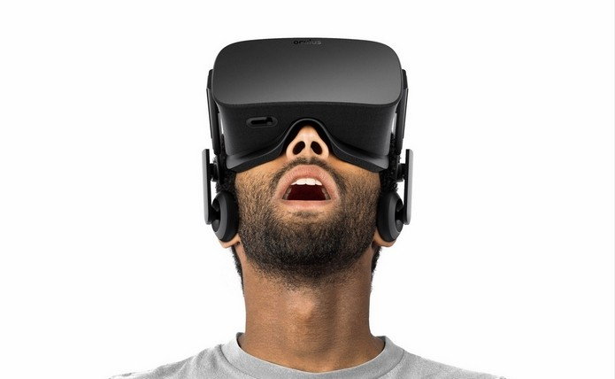

Oculus Rift
Um outro mundo diante de seus olhos

Saiba tudo sobre o Oculus Rift
por Caio Garcia
Atualizado em 23/Abril/2013
O que é
Oculus Rift é um sistema de jogo tudo-em-um para realidade virtual. Sem fios. Sem PC. Basta configurar o aplicativo Oculus para dispositivos móveis e você estará livre para explorar a RV de quase qualquer lugar. Os sensores dentro do fone de ouvido rastreiam com precisão seus movimentos e os traduzem instantaneamente em RV, ajudando você a se manter longe de objetos próximos. E com os controladores Oculus Touch, suas mãos estão no jogo, então você pode ver cada gesto seu e sentir o poder de cada impacto. Leve os jogos de RV para o próximo nível. E em todos os outros lugares.
Especificações Técnicas
Tabela Técnica do Oculus Rift
Tela -> | Tela de 7 polegadas |
Visores -> | 1290 x 1440p para cada visor |
Taxa de atualização -> | 90Hz |
Memória Interna -> | 12GB |
Como funciona
Uma das bases da ilusão visual de uma nova realidade é forjar a atual. Para isso, uma simples imagem plana passada diante de nossos olhos não basta. A mesma poderia simplesmente ser encarada como algo falso. É aí que entra um dos trunfos da realidade virtual.
Tecnologia revolucionária
Se até aqui apresentamos aspectos negativos dos óculos de realidade virtual, é preciso lembrar a razão de tantos gastos: trata-se de uma tecnologia revolucionária. O visor de 360º dividido em dois provoca uma sensação de imersão sem precedentes, que muda completamente a experiência com games. O jogador deixa de assistir ao jogo e passa, efetivamente, a fazer parte dele. O efeito de imersão 3D promete ser ainda maior com a chegada do áudio binaural nos headsets. A tecnologia, criada no século 19, consiste em capturar e reproduzir o som da maneira como os ouvidos humanos escutam. Assim, a gravação é feita com dois microfones, colocados um em cada lado da cabeça de um manequim. O resultado é um som tridimensional.